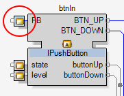
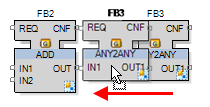
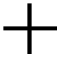

Editor keyboard shortcuts exist for:
graphical editors (composite, application, resource)
system editors (physical devices, discovery, network)
|
Shortcut |
Description |
|---|---|
|
Esc |
Escape key clears the selection and then cancels the current input operation |
|
Del |
Delete key deletes selected objects/text passages |
|
Ctrl+A |
Selects all objects from the current view |
|
Ctrl+C |
Copies all selected objects |
|
Ctrl+F |
Opens search dialog.
NOTE: In network editors the search-and-replace dialog is opened as with Ctrl+Shift+H, since the text-only search dialog is not available here.
|
|
Ctrl+H |
Network editor: Hides/unhides all unconnected ports of the selected function block. Not available in text editors. |
|
Ctrl+L |
Network editor: Converts all currently selected event and data connections into the 'Cross Reference' view, or vice versa all selected Cross Reference nodes back into drawn connection lines.
 |
|
Ctrl+O |
Open file |
|
Ctrl+P |
Network editor, text editor: Opens the dialog for printing the current document. |
|
Ctrl+Q |
Network editor: Set focus on selection; the currently selected elements are shown unchanged, while all other elements in the editor are displayed in a faded manner. |
|
Ctrl+S |
Save the current document |
|
Ctrl+Shift+Tab |
Moves the focus to the next open tab to the right of the currently active tab. (New tabs are added to the left, so the previous tab is on the right.) |
|
Ctrl+Tab |
Moves the focus to the next open tab to the left of the currently active tab. (New tabs are added to the left, so the next tab is on the left.) |
|
Ctrl+V |
Pastes objects from clipboard; FBs are always copied in form of a new instance (as it is always required for IEC 61499). |
|
Ctrl+W |
Network editor: Serves to insert a new function block in network editors; editing the initial letters of a function block into the input field causes a drop down list to open, which contains the names of all available function blocks |
|
Ctrl+X |
Cuts all selected objects |
|
Ctrl+Y |
Redo of last undo-action |
|
Ctrl+Z |
Undo of last action |
|
F1 |
Open context help |
|
F2 |
Network editor: Edit selected objects |
|
Home |
Network editor: Sets document position to show the left border of the current view. Text editor: sets the cursor to the beginning of the current line. |
|
Ctrl+Home |
Network editor: Sets document position to show the upper left corner of the current view. Text editor: sets the cursor to the topmost left position. |
|
End |
Network editor: Sets document position to show the right border of the current view. Text editor: sets the cursor to the end of the current line. |
|
Ctrl+End |
Network editor: Sets document position to show the lower right corner of the current view. Text editor: sets the cursor to the bottom right position. |
|
Page Down |
Sets document position to show the display detail directly below the current view |
|
Shift+Page Down |
Network editor: Sets document position to show the display detail directly at the right hand of the current view. Text editor: this selects the corresponding text part below, starting from the current cursor position. |
|
Page Up |
Sets document position to show the display detail directly above the current view |
|
Shift+Page Up |
Network editor: Sets document position to show the display detail directly at the left hand of the current view. Text editor: this selects the corresponding text part above, starting from the current cursor position. |
|
Letter or digit |
Network editor: Typing in a letter or digit selects the object having the first according character in its name. Typing in the same character several times changes the selection to the next element having a name that starts with the same character.
NOTE: A leading digit for a name of an object is not allowed, but within a frame or comment the properties of the input field Text may have a digit as the leading character. In this case that element will be selected when the corresponding digit is typed in.
|
|
Hold down middle mouse button resp. mouse wheel |
Network editor: Panning mode, the cursor changes to a hand and while pressing down the button the current document can be moved across the display Graphic editor: Panning mode, while pressing down the button the current document can be moved across the display |
|
Ctrl+Middle mouse button resp. Ctrl+Press mouse button |
Network editor: Panning mode with overview, an overview of the whole document appears, the red frame defines the displayed section Graphic editor: Panning mode, while pressing down the key the current document can be moved across the display |
|
Turning mouse wheel |
Network editor, graphic editor: Scales the document, zooming the display in or out related to the current cursor position. Text editor: scroll vertically. |
|
Ctrl+Turning mouse wheel |
Network editor: To scroll the view vertically. Text editor: zooms the text. |
|
Shift+Turning mouse wheel |
Network editor: To scroll the view horizontally. Text editor: scroll vertically. |
|
Arrow keys |
Network editor, graphic editor: Moves the selected elements or the selected segment of a connection line in the given direction, or else scrolls the view in that direction if nothing is selected and the current view shows only a section of the document. Text editor: jump to next position in respective direction. |
|
Ctrl+Arrow keys |
Network editor: Same functionality as arrow keys, but moving always only one pixel. Text editor: Left/right: jump to next word start/end. Up/down: scroll vertically. Graphic editor: same as arrow keys. |
|
Alt+Arrow keys |
Network editor: By this keystroke combination the selection of a line segment can be moved to the previous or next connection's handle. |
|
Alt+drag FB to FB |
Network editor: Creates several connection lines between the ports of two function blocks at once. The dragged function block snaps to the other FB at the ports and returns back to the original position when the mouse button is released. The Alt-key can be released as soon as one FB has been dragged a little bit. (see also Editors.)
 |
|
Spacebar+Arrow keys |
Network editor: Increases or decreases the space between elements within the selection always in relation to the upper left corner of the current selection. |
|
Shift |
Network editor: Pressing Shift and making a slight movement with the mouse shows the magnifier.
NOTE: this function is only available with a zoom factor smaller than 100%.
|
|
Shift+Ctrl |
Network editor: Toggle between the two magnifier modes:
|
|
Ctrl+Shift+H |
Opens replace-dialog |
|
Shortcuts |
Description |
|---|---|
|
Scroll wheel up (outwards) |
Zoom in. |
|
Scroll wheel down (downwards) |
Zoom out. |
|
Click wheel and drag |
Pan view: Cursor icon changes to and view shifts as cursor moves. |
|
Shift + Scroll wheel up (outwards) |
Scrolls view up. |
|
Shift + Scroll wheel down (downwards) |
Scrolls view down. |
|
Ctrl + Scroll wheel up (outwards) |
Scrolls view left. |
|
Ctrl + Scroll wheel down (downwards) |
Scrolls view right. |
|
Left click an object |
Selects the object. |
|
Left click in canvas + drag |
Physical Devices and Network Editor views: Cursor changes to  and draws a selection rectangle.Discovery view: Does nothing. |
|
Left click object + drag |
Physical Devices and Network Editor views: Selects and moves the object. Discovery view: Does nothing. |
|
Right click in canvas |
Physical Devices and Network Editor views: Opens global contextual menu. Discovery view: Does nothing. |
|
Right click object |
Selects object and opens object contextual menu. |